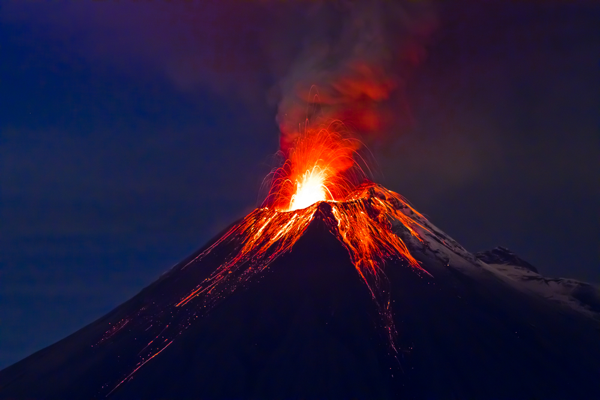

Hawai'i is the world's largest island chain. Only 7 of its 132 islands are inhabited. Many of the Hawaiian beaches are full of white sand. Other Hawaiian shores have sands that are green, red, pink or black.
The first image is located in Kaihalulu Beach (red sand), The second image is located in Papakolea Beach (green sand), and the third image is located in Punaluu Beach (black sand).
Hawai'i is commonly known for its volcanoes. Volcanoes in Hawaii have been around for millions of years. The main volcanoes in Hawaii are called “shield” volcanoes. These volcanoes produce lava flows that form shields like mountains. Shield volcanoes are more on the wider side than they are tall.
The volcano Mauna Loa, is a shield volcano which is also the worlds largest active volcano on earth.
The Mauna Loa is the largest volcano in the world and is four kilometers above sea level. The Mauna Loa has erupted 33 times since 1843. Its last eruption was 1984, which killed thousands of people and triggered tsunamis. It is a very deadly volcano that, when it erupts, it can cause famines from its thick ash deposits. The National Park Service website has more information on Mauna Loa and its recent eruption history.
The volcano Kīlauea, which is also a shield volcano, has been erupting since 1983, making it the world's most active volcano.
The Kīlauea erupts in the form of a lava lake. As of recently, fountains of lava have been spewing out of this volcano, which forced 1700 people to flee their homes. The Stanford News website has more information on Kīlauea and understands its recent activity and what will happen next to it.
Back to top of page